はじめて利用する方へ
Links-Systemの仕事を、画面と流れで理解する
Links-Systemは、運送業務の「取引先・案件・料金・日報・請求・支払・入出金・収支」を同じ案件でつなぐ社内Webシステムです。中心になるのは日報です。日報に登録した実績が、承認後の請求と支払の根拠になります。
1登録する
企業、パートナー、案件、金額データを準備します。
2日々入力する
日報の受領を確認し、勤務実績と経費を入力します。
3月次で確定する
日報を承認し、請求・支払を確認して帳票を発行します。
4お金を管理する
入出金予定と実績を管理し、収支を分析します。
最初のログイン
- 社内から案内されたURLをChromeまたはEdgeで開きます。
- ログインIDとパスワードを入力し、「ログイン」を押します。
- ホームが開いたら、左メニューまたは進捗カードから仕事を選びます。
メニューが見つからない場合：故障とは限りません。担当に付与された権限によって表示される機能が異なります。必要な機能がない場合は管理者へ確認してください。
機能を選ぶと、前に必要な仕事と、その結果を使う次の仕事が色付きで表示されます。
準備
→
→
→
確認
機能を選択すると、ここに役割と前後関係が表示されます。
運用イメージ
初めて担当する総務が、9月分の定期便を処理する日を例にします。
- 管理者から案内されたURLと自分のIDでログインする。
- 企業・パートナー・案件・料金の登録を確認してから、届いた日報を入力する。
- 日次確認と月次承認の後、請求・支払へ進み、銀行の実行結果を入出金管理へ記録する。
自分に必要な章を探す
担当別の使い方
総務・事務
企業・パートナー・案件を準備し、届いた日報を入力します。月末は事務作業で漏れを確認して、請求・支払・入出金へ進みます。
営業
担当案件と料金を確認し、日報や請求・支払の内容を承認します。担当外の案件は権限により表示されません。
管理者・経営者
確定、取消、入出金、収支を確認します。全社設定やユーザー権限の変更は影響範囲を確認して行います。
企業・パートナー
企業は自社の請求、パートナーは自分の日報・支払を確認します。社内用のマスタや他社情報は表示されません。
共通の注意：一覧で絞り込んでもデータは削除されません。確定・取消・実行の操作は履歴や帳票に影響するため、対象月と相手先を必ず確認してください。
運用イメージ
総務が入力し、営業が内容を確認する分担の例です。
- 総務が日報原本と入力内容を照合する。
- 営業が担当案件の承認待ちを確認する。
- 確定権限を持つ担当が請求・支払を確定する。
重複して見える理由
似ている機能の使い分け
同じ案件名や金額が複数画面に出るのは、二重登録のためではありません。同じデータを「準備」「進捗確認」「確定」「銀行実行」など別の目的で安全に扱うため、画面を分けています。
基本管理 と 各マスタ
基本管理は企業から金額までの関係をたどる入口です。各マスタは情報を登録・編集する正本です。関係確認は基本管理、修正は各マスタを使います。
基本案件 と 個別案件
基本案件は何度も使う仕事のひな形、個別案件は担当者・期間・請求先を持つ実際の契約です。基本案件の後の変更が、既存契約を勝手に変えないよう分けています。
個別案件 と 金額データ
個別案件は契約と稼働の条件、金額データは期間ごとの請求・支払単価です。単価改定の履歴を残し、過去の確定金額を守るため分離しています。
ホーム・事務作業・各一覧
ホームは全体の入口、事務作業は工程を横断する進捗確認、各一覧は入力・承認・確定を行う場所です。
日報 と 日報提出
日報は勤務実績と金額計算の根拠、日報提出はFAX・紙・メールが届いた事実の管理です。入力件数だけで受領済みにはなりません。
請求 と 支払
同じ承認済み日報を使いますが、請求は企業から受け取る売上、支払はパートナーへ支払う原価・控除です。単価と帳票も別に固定します。
先払い・支払・入出金管理
先払いは月途中の前払い、支払は月次の最終精算、入出金管理は銀行で動かす予定と実績です。同じ支出でも処理段階が違います。
マスター設定・ヘルプ編集・UIビルダー・ユーザー
順に、業務値、画面説明、一覧の見え方、利用権限を管理します。設定変更の影響範囲を限定するため、別機能になっています。
画面ヘルプ と 利用マニュアル
画面ヘルプは今開いている画面の短い説明、利用マニュアルは業務の前後関係や運用例まで学ぶ資料です。
マスターデータ取込 と DB取込
前者は原本を編集用Excelへ変換し、後者は完成Excelを検証してDBへ登録します。変換と登録を分けることで、内容を修正・確認する工程を確保しています。初期値の選択復旧はマスターデータ取込にある別操作です。
DB出力 と マスターデータ出力
DB出力は現在の業務マスター値、マスターデータ出力はシステム同梱の初期定義です。「いまの登録値」と「初期値」を混同して上書きしないために分けています。
金額データ と 計算ルール管理
金額データは契約ごとの単価・料金条件、計算ルールは日次・月次・控除・税などの処理を版管理します。契約単価の改定と計算処理の公開は別の変更です。
ユーザー管理 と 利用可能メニュー選択
ユーザー管理は「誰がどの役割か」、利用可能メニュー選択は「その役割が何を使えるか」です。複数役割では許可を合わせて判定し、承認・取消の操作制限は別に適用します。
運用イメージ
FAXは届いているが、内容がまだ未入力のケースで使い分けます。
- 日報提出で原本の到着を記録する。
- 日報で開始・終了・休憩などの実績を入力する。
- 事務作業で進捗を見直し、受領と承認を混同していないか確認する。
企業 → 基本案件 → 個別案件 → 金額データを列でたどり、「この会社のこの仕事に、どの料金がつながっているか」を確認する入口です。登録の正本ではなく、関係を見失わないために作られています。
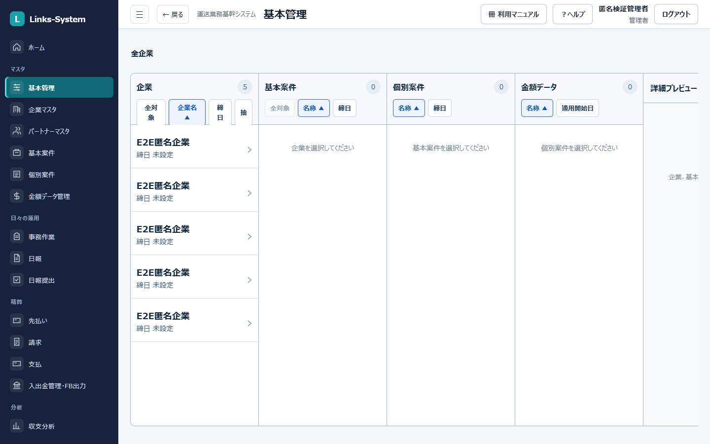
上位を選ぶと下位が絞られます。編集は対象をダブルクリックして各マスタへ進みます。
運用イメージ
総務が、定期便Aの契約と料金のつながりを問い合わせ対応前に確認します。
- 企業列で見本物流株式会社を選ぶ。
- 基本案件、個別案件、金額データを順に選ぶ。
- 適用期間を確認し、訂正が必要なら対象の編集画面へ進む。
具体例
1. 料金のつながりを調べる
企業を選び、基本案件、個別案件、金額データの順に選びます。右のプレビューで適用期間と単価を確認します。
2. 下位の情報を追加する
企業・基本案件などの親を選び、対象列の「追加」から登録画面を開きます。引き継がれた親の情報を確認して保存します。未選択時は先に親を選びます。
3. 同じ条件の契約を作る
コピー元を選択して対象列のコピー操作を使います。新しい案件のパートナー・期間と、コピーされた料金を確認します。単価改定だけなら金額データの「コピーして改定」を使います。
使い分け：ここでは関係を確認し、企業名や契約条件そのものの修正は企業・案件・金額データの各画面で行います。
請求先となる企業の基本情報、請求先、車両、担当を管理します。請求書の宛先や案件選択に使われるため、表記を統一します。
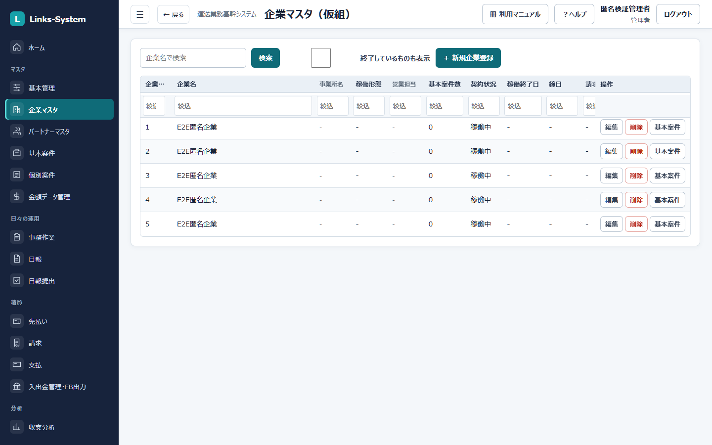
検索で対象企業を絞り、詳細で住所・請求先・担当などを編集します。並び順や絞り込みを確認してから新規登録します。
運用イメージ
総務が、新しい取引先の契約書をもとに請求先を準備します。
- 企業名で検索し、同一企業が未登録か確認する。
- 新規登録で企業情報を入力して保存する。
- 既定の請求先を開き、請求書の印字名称・送付先を照合して案件登録へ進む。
具体例
1. 新規取引先を登録する
「新規登録」から正式名称、略称、住所、締日などを入力します。保存後、既定の請求先No.0を確認します。
2. 部門別の請求先を追加する
企業詳細の請求先欄で企業情報をコピーし、部門名・住所・取纏No.を変更して保存します。
3. 契約終了企業を整理する
契約状況と終了日を設定します。通常一覧から隠れても履歴や過去帳票は残ります。
次につながる：基本案件・個別案件の所属企業と、請求書の宛先になります。
業務を担当するパートナーの連絡先、振込先、契約状態を管理します。個別案件への割当と支払の相手先になります。
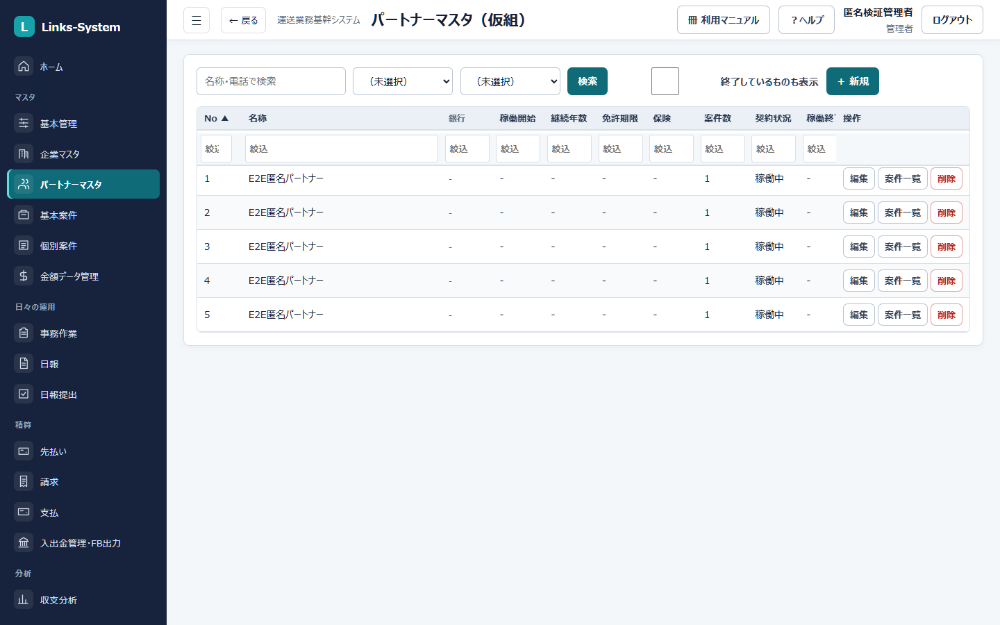
個人情報や口座情報は権限のある担当者だけが取り扱います。
運用イメージ
総務が、新しく定期便を担当するパートナーを登録します。
- 名称で既存登録を検索する。
- 契約書を見て名称・カナ・メールなどを入力し保存する。
- 振込先を本人確認資料で照合し、個別案件の担当パートナーとして選択する。
具体例
1. 新しいパートナーを登録する
氏名・名称、連絡先、所属、契約状態を登録し、個別案件から選べる状態にします。
2. 振込先を変更する
詳細で銀行・支店・口座を確認して変更します。確定済み帳票や実績は過去時点の情報を維持します。
3. 稼働終了者を通常一覧から外す
契約状況を終了にして終了日を登録します。必要時は「終了しているものも表示」で再確認できます。
次につながる：個別案件、日報、先払い、支払の対象になります。
繰り返し使う業務条件のテンプレートです。ここから個別案件を作ると、属性と料金一式がコピーされ、実契約側を独立して編集できます。
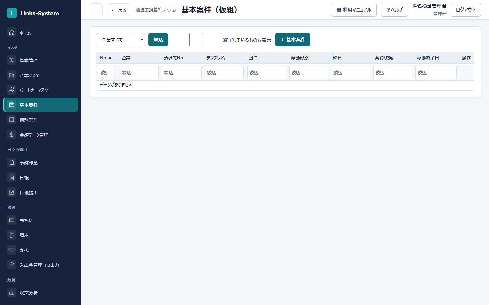
一覧から基本案件を登録・編集し、基本時刻や企業、締日など個別案件を作るときの初期値を整えます。
運用イメージ
営業が、同じ条件で複数名に割り当てる定期便のひな形を用意します。
- 企業を選び、基本案件を新規登録する。
- 業務名と標準の開始・終了・休憩を入力する。
- 保存後に標準料金を設定し、実際の担当者を持つ個別案件を作る。
具体例
1. 定期便のひな形を作る
企業、業務名、基本時刻、締日を登録し、標準の金額データを用意します。
2. 似た業務を複製する
既存の基本案件をコピーし、名称や時刻だけを変更します。元のひな形は変わりません。
3. 新年度の標準条件を用意する
今後作る契約向けに基本案件を更新します。既に作成済みの個別案件は自動変更されないため、必要なら個別に改定します。
なぜ個別案件と分かれる：ひな形の改定で稼働中・過去の契約条件が変わらないようにするためです。
誰が、どの企業の、どの期間・条件の仕事を担当するかを管理します。日報・請求・支払は個別案件単位でつながります。
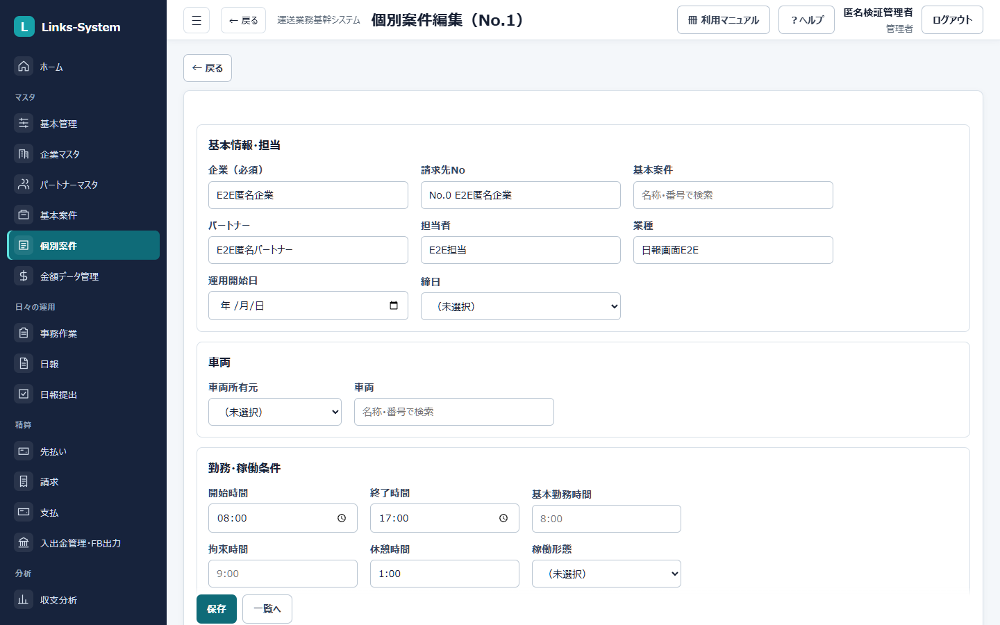
基本案件から作成し、担当パートナー、契約期間、請求先を実契約に合わせます。
運用イメージ
営業が、見本太郎さんの9月からの契約を作成します。
- 定期便Aの基本案件から個別案件を作る。
- パートナー、契約期間、請求先を実契約に合わせる。
- コピーされた料金の適用日と請求・支払額を確認して日報入力へ渡す。
具体例
1. 新しい契約を開始する
基本案件から個別案件を作り、パートナー、開始日、請求先、支払区分を確認して保存します。
2. 担当者を交代する
契約境界を確認し、必要に応じて元案件を終了して新しい案件をコピー作成します。過去日報の担当は維持します。
3. 同条件の案件を追加する
個別案件をコピーし、担当パートナーや期間だけを変更します。料金も独立した系列として保持されます。
前後関係：企業・パートナー・基本案件を参照し、金額データと日報の親になります。
適用期間ごとの料金カードを管理します。同じ勤務実績でも、企業へ請求する単価とパートナーへ支払う単価を別々に持ちます。
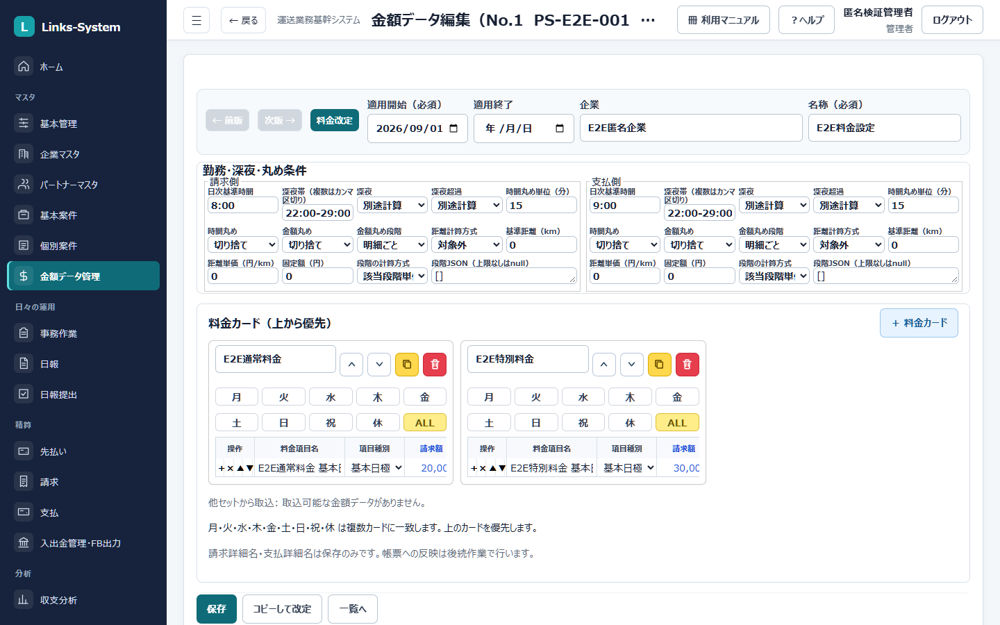
曜日・料金項目・請求額・支払額を確認し、適用開始日を基準に履歴を残します。
運用イメージ
営業が、9月開始の平日料金を登録する例です。
- 対象案件の金額データを開き、適用開始日と名称を入力する。
- 平日カードで曜日と料金項目を設定し、請求と支払を別々に入力する。
- 保存後に対象日の未確定日報で適用料金を確認する。
具体例
1. 初回料金を登録する
適用開始日、名称、平日・休日などの料金カードを登録し、請求額と支払額をそれぞれ入力します。
2. 休日・深夜料金を分ける
対象曜日と項目種別を確認して専用行を追加します。同じ時間を複数料金へ重複計上しない構成にします。
3. 10月から単価を改定する
現在のセットを「コピーして改定」し、適用開始日を10月1日にして金額を変更します。過去版は上書きしません。
なぜ案件と分かれる：料金改定履歴を残し、確認済み・承認済み・発行済みの金額を後日の変更から守るためです。
企業やパートナーを起点に、日報・請求・支払の進み具合を一画面で確認します。ここで本体を入力するのではなく、遅れている工程を見つけて各機能へ移動します。
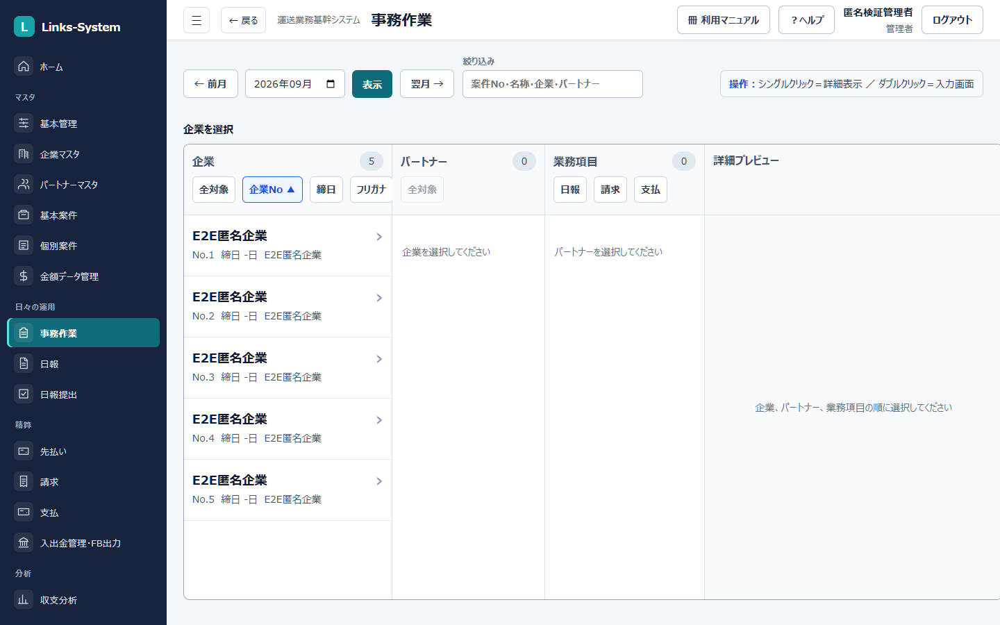
対象月と状態を確認し、気になる工程から実処理画面へ進みます。
運用イメージ
総務が、9月の月末処理で止まっている工程を探します。
- 対象月を9月に合わせ、企業またはパートナーを選ぶ。
- 日報・請求・支払の進捗を横並びで確認する。
- 未処理の工程から実際の入力画面へ進み、処理後に戻って進捗を確認する。
具体例
1. 未入力の日報を先に片付ける
対象月を合わせ、日報が未入力の企業・案件を絞り、日報画面へ移動します。
2. 営業確認待ちを担当別に見る
担当企業を選び、請求・支払の確認待ちを見つけて該当詳細へ進みます。
3. 月末の処理漏れを確認する
日報、請求、支払の状態を横並びで見て、前工程が止まっている案件から順に対応します。
ホームや一覧との違い：ホームは全体概要、事務作業は複数工程の追跡、各機能一覧は実際の入力・承認を行う場所です。
案件ごとに勤務日、開始・終了、休憩、距離、経費を入力します。料金設定を使って請求側と支払側を再計算し、日次確認と月次承認を行います。
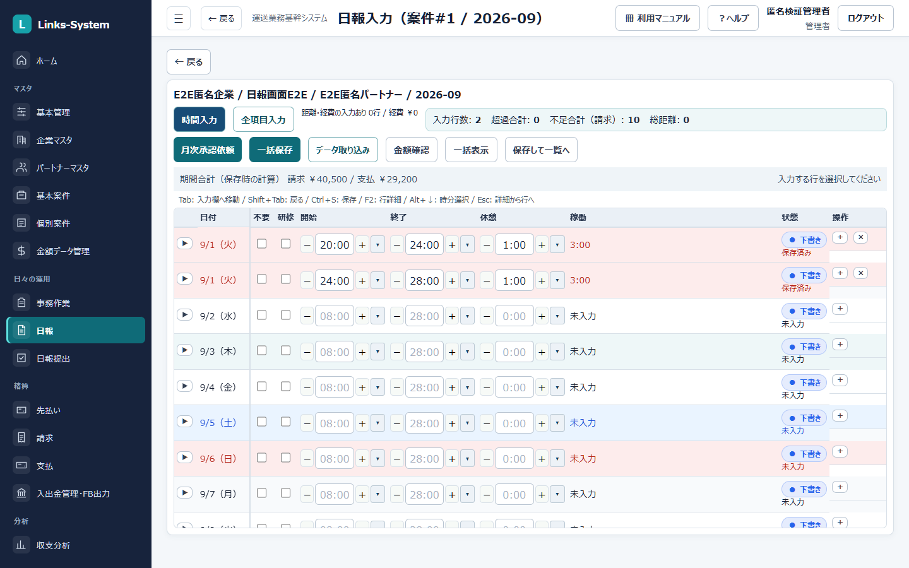
時間入力を初期表示します。距離・経費は「全項目入力」で確認します。1日には複数の作業行を登録でき、詳細は選択行の下に開きます。
時間入力とキーボード操作
開始・終了・休憩は、230・2.30・2:30を02:30、1730を17:30、8を08:00へ変換します。全角数字も入力できます。2.3は曖昧なためエラーになります。2.03または2.30と入力してください。翌4時は28:00、開始・終了の上限は47:59です。
Tabで開始→終了→休憩→次行、Shift＋Tabで逆順に移動します。全項目入力では表示中の編集可能な入力欄を移動します。Ctrl＋Sで保存、F2で行詳細、Alt＋↓で時分選択、Escで詳細から行へ戻れます。詳細内にいる間は詳細の入力欄を巡回します。
時間入力で隠れている距離・経費も保持されます。非表示項目の件数と合計を確認し、必要なら全項目入力へ切り替えます。不正な値は修正してから保存してください。未保存のまま画面を移動すると確認が表示されます。
運用イメージ
総務が、9月1日分のFAXを原本と照らしながら入力します。
- 9月・定期便A・見本太郎の対象行を開く。
- 時間入力で開始→終了→休憩をTabで移動し、全項目入力へ切り替えて距離と経費を入力する。
- Ctrl＋Sで保存し、実働時間と請求・支払の計算根拠を原本・契約に照合して日次確認する。
具体例
1. FAXの日報を連続入力する
時間入力で開始に8、Tabで終了へ移動して17、Tabで休憩へ移動して1と入力します。次の日へ進み、全項目入力に切り替えて距離120km・通行料1,500円を登録します。Ctrl＋Sで保存し、原本と照合して日次確認を付けます。
2. Excelをまとめて取り込む
一覧の「データ取り込み」でファイルと列対応を確認します。外部ファイルの金額は採用せず、システムの料金で再計算します。
3. 翌朝までの勤務と臨時単価を登録する
20時～翌4時は20:00～28:00と入力します。F2で行詳細を開き、一時単価変更で金額と理由を入力します。契約料金・計算根拠を展開して確認し、保存します。日次確認済みなら先に確認を外し、修正後に再確認します。
次につながる：月次承認済みの日報が請求・支払の本番確定の根拠になります。日報提出の受領状態とは別管理です。
パートナーから紙・FAX・メール等の日報が届いた事実を、案件ごとの月3サイクルで記録します。勤務実績の入力画面ではありません。
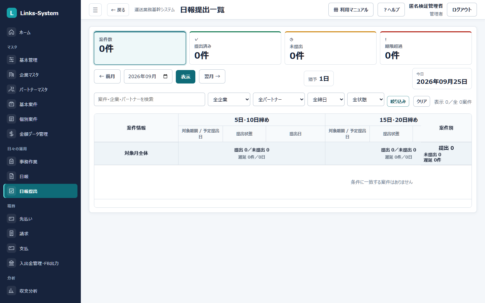
提出済みは日報入力件数から自動設定されません。届いた原本を確認して記録します。
運用イメージ
9月上旬のFAXが9月11日に届いたため、総務が受領を記録します。
- 対象月と案件を検索する。
- 1回目の提出をONにし、原本の到着日を入力する。
- 保存結果を確認し、日報画面で実績を入力する。
具体例
1. 上旬分のFAXが届いた
対象月と案件を確認し、1回目の提出をONにします。実際の到着日が今日でなければ提出日を直します。
2. 提出予定日を過ぎた案件を確認する
遅延表示を絞り、パートナーへ確認します。受領していないものを推測でONにしません。
3. 提出日を訂正する
対象サイクルを開き、原本や受信記録と照合して正しい日付へ変更します。
なぜ日報と分かれる：「資料が届いたこと」と「内容を入力・承認したこと」を混同せず、未着と未入力を別々に追えるようにするためです。
支払区分が分割の個別案件について、月3サイクルの先払い予定・手数料・実績を管理します。月次支払の前に渡した金額として、後の支払へ反映されます。
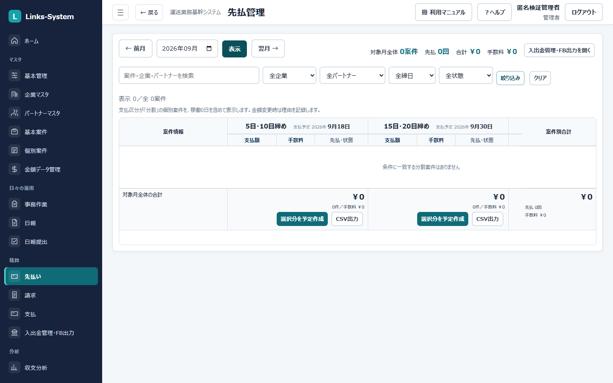
稼働0日でも対象案件は表示されます。対象月・サイクル・案件を必ず確認します。
運用イメージ
総務が、分割契約の9月1回目の先払い予定を作成します。
- 対象月と1回目、分割対象の案件を確認する。
- 画面の予定額・手数料を確認し、例外変更があれば金額と理由を入力する。
- 支払予定を作成・更新し、入出金管理で予定日と金額を照合する。
具体例
1. 上旬グループの予定を作る
対象月の1回目を選び、対象案件と金額・手数料を確認して「支払予定を作成・更新」します。
2. 例外金額へ変更する
元値を確認し、変更額と理由を入力して予定を更新します。変更履歴が残ります。
3. 未実行予定を取り消す
対象と理由を確認して作成取消を行います。実行済みの場合は直接消さず、返金・訂正の予定で扱います。
支払との違い：先払いは月途中の支給、支払は月次総額から先払い・手数料・控除を差し引く最終精算です。
日報の請求側計算を月額明細にまとめ、営業確認・一括承認・帳票発行を行います。請求先や条件が一致する案件は取りまとめられます。
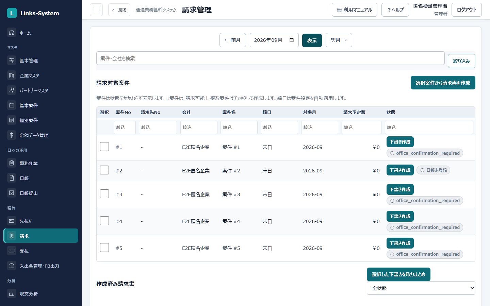
対象を選んで下書きを作り、詳細で明細・承認・発行状態を確認します。検証例では未作成のため一覧は空です。
運用イメージ
総務が、9月の承認済み日報から企業向け請求を作ります。
- 対象月・企業・案件を選び、下書きを作成する。
- 日報から再反映し、明細・請求先・税と調整を確認する。
- 営業確認と承認を経て発行し、入出金管理の入金予定を確認する。
具体例
1. 1案件の請求書を作る
対象月・企業・案件を確認して下書きを作り、日報から再反映、明細確認、営業確認依頼へ進みます。
2. 同じ請求先の2案件をまとめる
請求先・取纏No.・締日などの条件が一致する案件を選び、1枚の請求へまとめます。条件が違う場合は分けます。
3. 発行後の誤りを訂正する
理由を入力して発行を無効化し、訂正下書きを作ります。旧番号は再利用せず、新しい番号で再発行します。
支払との違い：請求は企業向けの売上です。同じ日報でも支払側とは単価、調整、相手先、帳票が異なります。
日報の支払側計算を月額明細にまとめ、先払い、振込手数料、定額控除を反映して最終振込額を確定します。
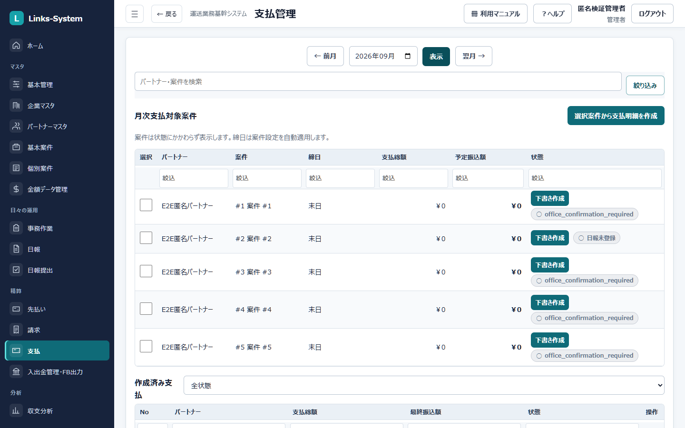
対象月から下書きを作り、詳細で内訳と控除を確認して承認後に帳票を発行します。検証例では未作成のため一覧は空です。
運用イメージ
総務が、9月の日報と先払い実績を照合して月次精算します。
- 対象月・パートナー・案件を選んで下書きを作成する。
- 日報の支払明細と、先払い・手数料・定額控除を確認する。
- 確認・承認・発行を経て出金予定へ進み、銀行実行は別に記録する。
具体例
1. 通常の月次支払を作る
対象案件の下書きを作り、日報明細、支払単価、控除を確認して営業確認へ進みます。
2. 先払い済み金額を精算する
先払い実績と手数料が控除側に反映されていることを確認し、月次総額との差額を最終振込額とします。
3. 控除しきれない金額を繰り越す
支払額を超える控除がある場合、0円未満の振込にせず、未控除分が次回繰越になっていることを確認します。
入出金管理との違い：支払は精算内容と帳票を確定する場所、入出金管理は銀行で実行する予定と実績を扱う場所です。
請求入金、通常支払、先払いなどを管理回・予定・実績に分けて確認し、銀行CSVを出力します。CSV出力だけでは実行済みになりません。
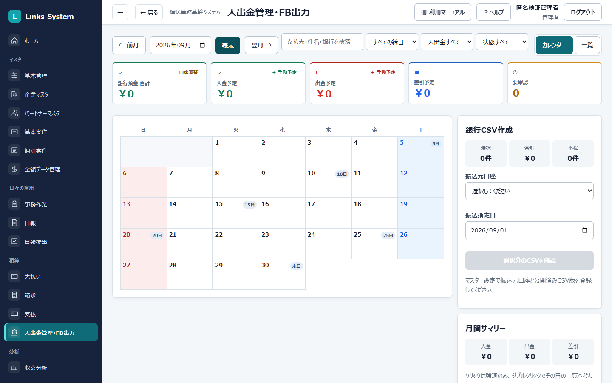
業務上の管理回、銀行予定日、実際の実行日を分けて記録します。
運用イメージ
経理担当が、銀行で完了した振込を予定と照合して記録します。
- 対象月・締日から該当の出金予定を開く。
- 銀行の結果に一致する予定だけに実行日と実行額を入力する。
- 登録後の状態・実績を確認する。口座残高は別の口座調整台帳で管理する。
具体例
1. 締日25日の振込予定を確認する
対象月と「締日」の25日を選び、出金予定、口座、金額を確認します。休日の出金は前営業日、入金は翌営業日に調整されます。カレンダーの日付は1回押すと強調表示、ダブルクリックでその日の一覧へ切り替わります。
2. 銀行CSVを出力する
公開済みの銀行設定と振込元口座を選び、対象予定からCSVを出力します。出力後の状態は「出力済み」です。
3. 銀行処理後に実績を登録する
銀行の結果と照合し、実行日・実績を登録します。CSVを作っただけで実行済みにしません。
現在の範囲：銀行別CSVと予定・実績管理が利用できます。銀行サービス仕様が未確定の設定は、銀行取込用として公開しません。銀行預金残高は期首残高と口座調整で管理し、請求・支払の実績から自動更新されません。
請求と支払の結果を担当者、企業、パートナーなどの切り口で比較し、利益率や稼働日を確認します。元データを変更する画面ではありません。
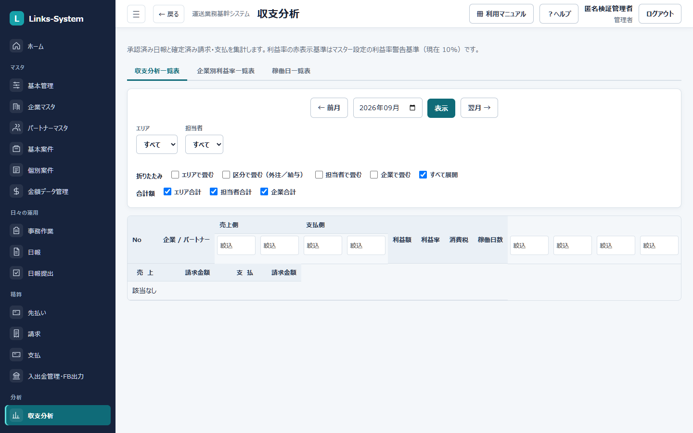
数字に違和感がある場合は、元の案件・日報・請求・支払へ戻って確認します。
運用イメージ
管理者が、9月の企業別収支から確認対象を探します。
- 対象月を選び、企業別利益率などの表を開く。
- 見本物流の売上・原価・利益率を比較する。
- 想定と違うときは案件・日報・請求・支払の根拠を確認する。
具体例
1. 営業担当者別の状況を見る
対象月を選び、一覧表で担当者ごとの請求、支払、差額を比較します。
2. 利益率が低い企業を確認する
企業別利益率を並べ替え、基準を下回る企業の案件・料金を確認します。
3. 稼働日の偏りを調べる
稼働日表で企業・パートナーの出勤日数を見て、日報の未入力や契約条件を確認します。
注意：分析は結果を見る機能です。修正は分析値を直接書き換えず、原因となる元データの画面で行います。
担当者、事業所、採番、区分、祝日、振込手数料、銀行CSV、振込元口座、画面色など、全社で共通利用する設定を管理します。
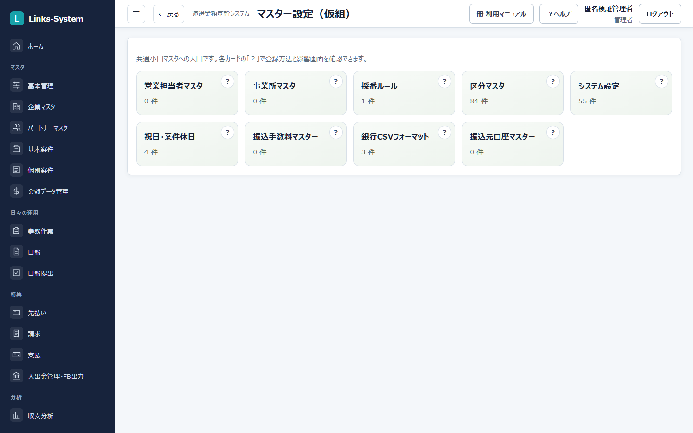
変更前に、カードのヘルプで影響する画面と登録方法を確認します。
運用イメージ
管理者が、日報の入力文字を見やすくする共通設定を確認します。
- マスター設定のシステム設定から日報入力画面の設定を開く。
- 現在値を控え、入力文字サイズと時間刻みを確認・設定する。
- 保存後に日報を開き直し、表示と増減操作を確認する。
具体例
1. 来年の祝日を登録する
祝日マスターへ日付と名称を登録します。日報の行色と休日料金候補に影響します。
2. 振込元口座を追加する
銀行情報と口座を登録し、入出金管理で選べることを確認します。公開前のCSV設定は下書きで検証します。
3. 日報入力の見え方を調整する
入力文字サイズ、曜日色、時間・距離・経費の増減単位を変更し、日報画面で確認します。
他の設定画面との違い：業務上の値はここ、説明文はヘルプ編集、一覧列はUIビルダー、利用者と権限はユーザー管理です。
各画面上部の「ヘルプ」で表示する概要と、入力がどこへ影響するかの説明を編集します。業務全体を教える利用マニュアルとは役割が違います。
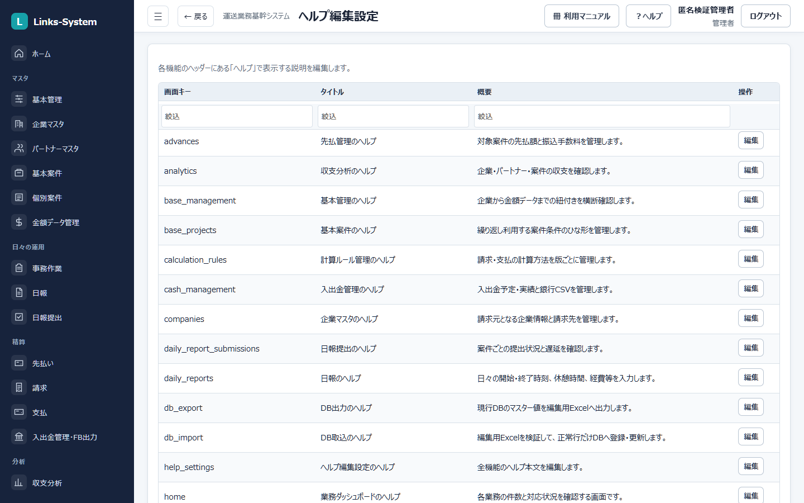
短く、現在の画面だけで理解できる説明を登録します。
運用イメージ
管理者またはシステム担当が、日報の入力担当向けに短い注意を追記します。
- 対象の日報画面のヘルプ編集を開く。
- タイトル・概要・操作説明へ案内文を入力する。
- 保存し、日報画面のヘルプで表示と改行を確認する。
具体例
1. 新しいボタンの説明を追加する
対象機能を選び、画面概要と操作結果を更新します。専門用語だけで説明しないようにします。
2. 誤解されやすい入力の影響を書く
例えば「CSV出力では実行済みにならない」など、その画面で特に必要な注意を追記します。
3. 公開前に表示を確認する
保存後、対象画面の「ヘルプ」を開き、改行、用語、対象画面が正しいか確認します。
利用マニュアルとの違い：ヘルプはその場の短い案内です。機能間の流れ、担当別運用、具体例はこの利用マニュアルで説明します。
主な一覧で表示する列と並び順を会社共通で設定します。データの中身は変えず、必要な情報を見つけやすくします。
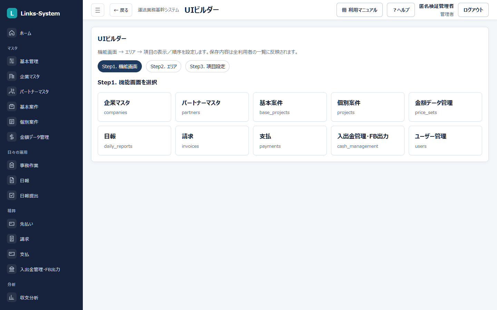
保存した構成は同じ一覧を使う全利用者へ反映されます。
運用イメージ
管理者が、企業一覧で締日を見落としにくい列配置にします。
- 機能画面で企業一覧を選び、対象の一覧エリアへ進む。
- 締日の表示をONにして、必要に応じて列順を変更する。
- 保存後に企業一覧を開き、PCと狭い画面で表示を確認する。
具体例
1. 企業一覧に締日を表示する
企業一覧を選び、締日の列を表示対象へ追加して保存します。
2. よく見る列を左へ移す
対象一覧で列順を変更し、画面幅の狭い端末でも重要列が先に見えるようにします。
3. 既定表示へ戻す
運用に合わなかった場合は既定構成へ戻し、対象一覧で全列と操作列を確認します。
マスター設定との違い：UIビルダーは見え方だけを変更します。締日、区分、色などの業務値はマスター設定で変更します。
ログインする人のID、表示名、所属、複数の権限、有効・無効を管理します。権限によってメニューと参照できる範囲が変わります。
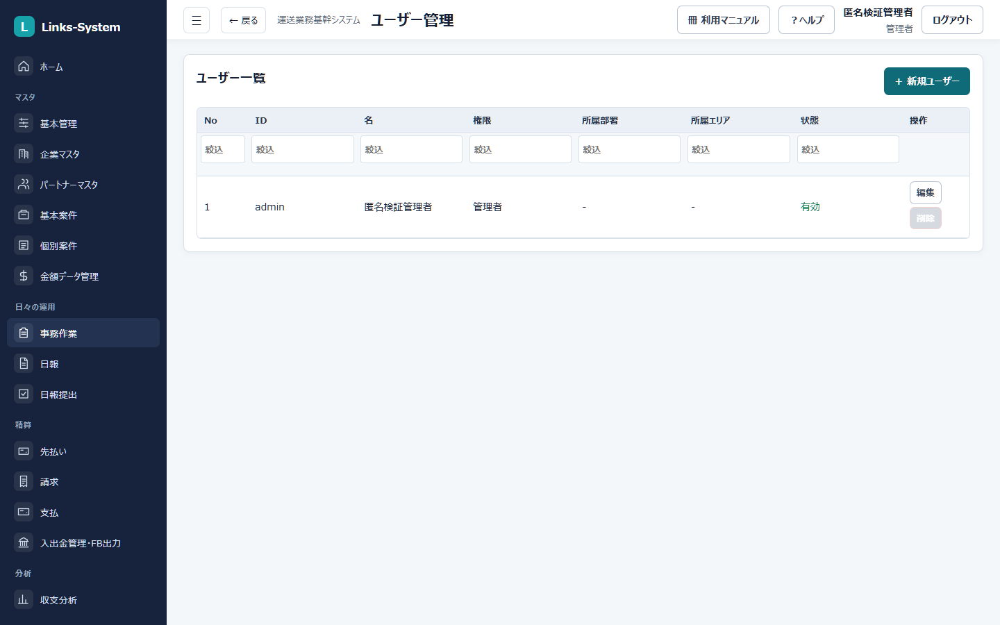
必要最小限の権限を付与し、使わなくなったアカウントは無効にします。
運用イメージ
管理者が、日報入力を担当する新入社員のアカウントを準備します。
- 既存IDを確認してから新規ユーザー画面を開く。
- ID・名・本人用パスワードと必要な権限・所属を設定する。
- 本人の再ログイン後、担当メニューと参照範囲を確認する。
具体例
1. 新入社員のIDを作る
ログインID、表示名、初期パスワード、所属、担当業務に必要な権限を登録します。
2. 総務と営業の両方を担当する
必要な複数権限を付与し、再ログイン後に対象メニューと担当範囲を確認します。
3. 退職者の利用を止める
ユーザーを物理削除せず無効にします。過去の操作履歴に残る担当者情報は維持されます。
注意：画面が表示されない問題は、まずユーザーの権限と所属範囲を確認します。
旧原本Excelを編集用の形式へ変換します。通常の変換では業務データをDBへ登録しません。基盤マスター初期値の選択復旧は、この画面の別操作です。
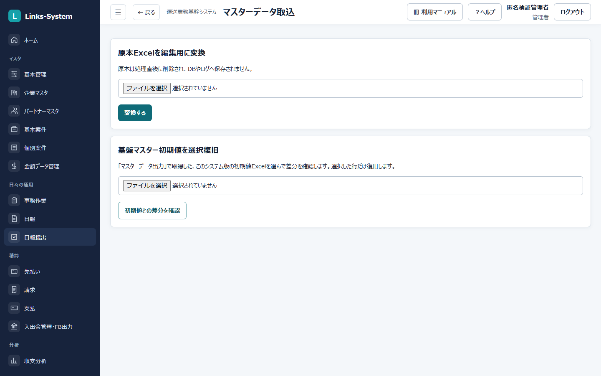
原本Excelを編集用に変換／基盤マスター初期値を選択復旧。画面例は匿名検証環境です。
運用イメージ
移行担当が、旧Excelを編集用の形式へ変換します。
- 匿名の旧原本Excelを選び、変換する。
- 件数と要確認箇所を確認して編集用Excelをダウンロードする。
- 編集用Excelの不備を修正し、DB取込の検証へ渡す。
具体例
1. 旧Excelを移行する
原本Excelを選んで「変換する」を押し、件数と要確認箇所を見て「編集用Excelをダウンロード」します。修正したファイルはDB取込へ渡します。
2. 共通区分を元に戻す
マスターデータ出力で取得した同じシステム版の初期値Excelを選び、「初期値との差分を確認」を押します。現在値と初期値を照合し、必要な行だけ選択して復旧します。
3. 採番の復旧で競合が出る
競合行を無理に登録せず管理者へ確認します。使用済み番号を再発行しないため、次番号は初期値復旧の対象外です。
関連する機能：DB取込 / マスターデータ出力 / マスター設定
編集済みExcelをDBへ登録・更新する工程です。新規、更新、変更なし、エラー、依存先エラー、競合を先に確認し、正常行だけを登録します。
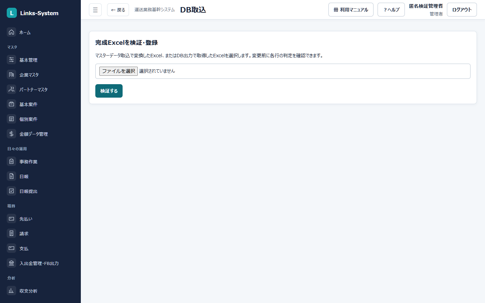
完成Excelを検証・登録。画面例は匿名検証環境です。
運用イメージ
移行担当が、DB出力した企業情報の住所1件を修正して取り込みます。
- 出力Excelの取込キーなどの管理項目を保持したまま、住所を編集する。
- 編集済みExcelを選び、検証する。
- 更新対象と内容を照合して正常行を登録し、企業画面で再確認する。
具体例
1. 住所を一括修正する
DB出力で取得したExcelの住所を編集し、この画面でファイルを選んで「検証する」を押します。更新件数と内容を確認して「正常行を登録」を実行します。
2. 参照先エラーを直す
案件の企業・パートナー参照にエラーがあれば、エラーExcelを取得して取込キーと親データを修正し、再検証します。
3. 出力後に別担当が更新した
競合行は除外されます。DB出力を取り直して現行値と修正内容を照合してください。Excelから行を消してもDBの行は削除されません。
関連する機能：マスターデータ取込 / DB出力 / 企業マスタ / 個別案件 / 金額データ
現行DBの企業・請求先・車両・パートナー・案件・料金を編集用Excelに出力します。手入力したレコードも対象です。
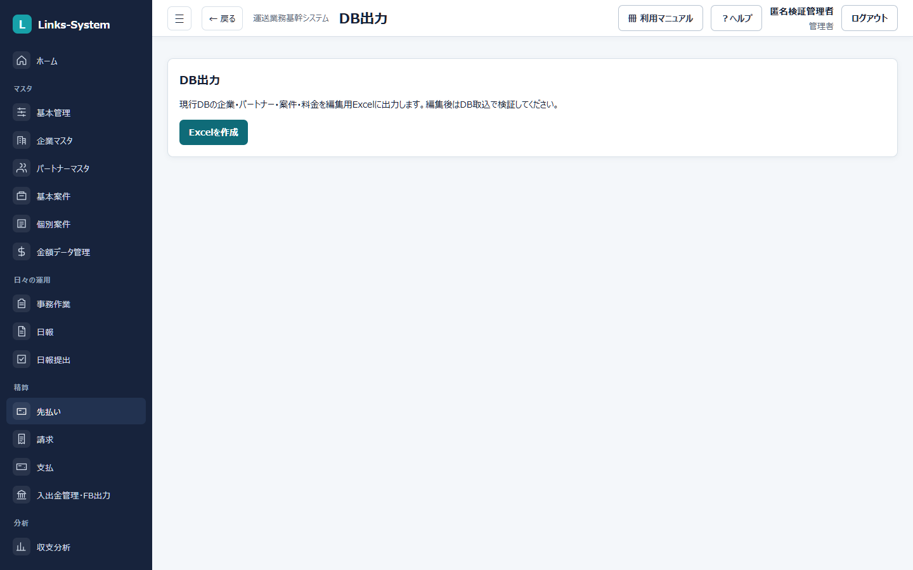
現行DBのマスターをExcelへ出力。画面例は匿名検証環境です。
運用イメージ
移行担当が、現在の企業住所を一覧で確認するためExcelを取得します。
- DB出力でExcelを作成する。
- ダウンロードしたファイルを保存し、対象の企業を探す。
- 修正する場合は管理項目を保持して編集し、DB取込へ渡す。
具体例
1. 現在値を確認する
「Excelを作成」を押し、作成後に「ダウンロード」します。出力はマスター情報の確認用で、日報・帳票を含むDB全体のバックアップではありません。
2. 複数のマスターを修正する
出力Excelの取込キーと項目コードを保持して値を編集し、DB取込で差分を検証します。
3. 過去の料金を確認する
過去改定版もExcelで確認できますが、再取込では変更できません。訂正が必要な場合は金額データ管理の理由・履歴を残す操作を使います。
関連する機能：DB取込 / 企業マスタ / パートナー / 個別案件 / 金額データ
システムに同梱された基盤マスター初期値Excelを取得します。現在の企業・パートナーなどの登録値を取り出すDB出力とは内容が異なります。
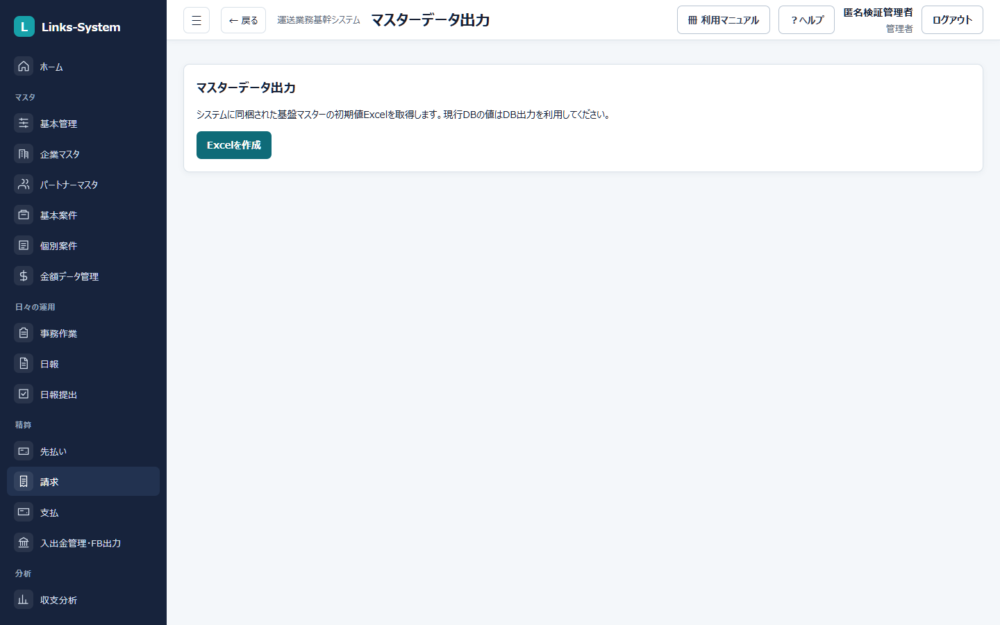
基盤マスター初期値Excelの出力。画面例は匿名検証環境です。
運用イメージ
管理者が、共通区分の初期定義を調べるため同梱Excelを取得します。
- マスターデータ出力でExcelを作成する。
- ダウンロードし、初期値のシート・項目を確認する。
- 復旧が必要ならマスターデータ取込で差分を確認して対象行だけを選ぶ。
具体例
1. 初期の区分を調べる
「Excelを作成」から「ダウンロード」へ進み、初期値のシートと項目を確認します。
2. 誤変更した区分を復旧する
取得した初期値Excelをマスターデータ取込の復旧欄へ渡します。差分を確認し、必要な行だけを選択して復旧します。
3. 現行値が見当たらない
このExcelは初期定義です。現在DBに登録されている企業・案件・料金を見たい場合はDB出力へ進みます。
関連する機能：マスターデータ取込 / マスター設定 / DB出力
検証専用環境・検証専用DBでサンプル確認から日報、月次承認、精算、帳票まで段階的に生成します。メニューが表示されても通常環境では生成できません。
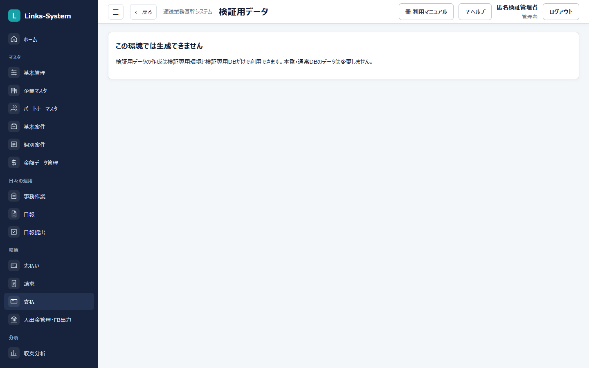
通常環境では生成不可の案内、検証環境ではサンプル設計。画面例は匿名検証環境です。
運用イメージ
管理者が用意した検証専用環境で、日報入力の練習用サンプルを確認します。
- 検証専用URLと専用DBであることを管理者に確認する。
- 期間・スタンスなどを設定し、まずサンプルを表示する。
- 補完内容を確認して設定版を承認し、必要な生成段階だけを実行する。
具体例
1. 日報入力を練習する
管理者が用意した検証環境で元データと稼働パターンを設定し、サンプルを表示します。補完内容を確認してその設定版を承認した後、日報を生成します。
2. 月末処理を確認する
日報生成の完了を確認し、日報提出・月次承認、先払・請求・支払、確定・帳票・入出金の順に生成して結果を確認します。
3. 生成できないと表示される
通常DBの保護動作です。利用可能メニューのチェックを付けても解除されません。検証環境のURLを管理者へ確認してください。
関連する機能：日報 / 請求 / 支払 / 利用可能メニュー選択
日次計算、月次集約、控除、税・丸めなどの処理を版管理します。金額データは契約単価、この画面は計算の処理条件を管理するために分かれています。
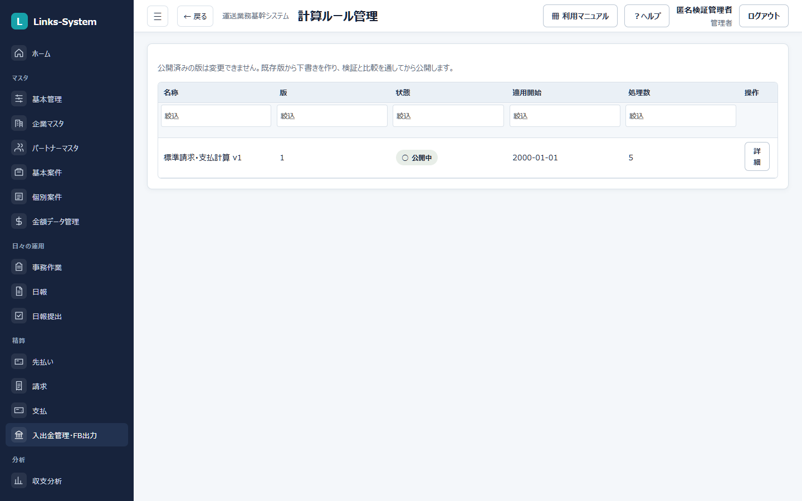
ルール版一覧から詳細・検証・公開へ。画面例は匿名検証環境です。
運用イメージ
システム担当が、既存版から検証用の下書き版を準備します。
- 既存版の詳細から、この版から下書きを作る。
- 名称・適用期間を設定し、引き継いだ処理を確認して下書き保存する。
- 検証と現行版との比較で差分を確認する。公開は社内確認後の別判断とする。
具体例
1. 次の計算版を準備する
既存版の「詳細」から「この版から下書きを作る」を押し、名称・適用期間・処理を確認して下書き保存します。公開済み版は直接編集できません。
2. 変更の影響を確認する
下書きで「検証」と「現行版と比較」を行い、問題を修正してから「公開」します。比較は標準例であり、実データ全件の差分ではありません。
3. 未確定の下書きを更新する
公開版から「選択して再計算」を開き、必要な日報・請求・支払だけチェックして実行します。公開しただけで既存下書きは更新されず、確定済み結果も変更しません。
関連する機能：金額データ / 日報 / 請求 / 支払
2026年9月25日版：今回の更新と今後の機能
現行25機能を掲載しています。各機能に画面イメージと3件の運用例があります。導入を含む全29章に「運用イメージ」と架空データによる「入力イメージ」を追加しました。画面の役割表示は標準的な担当の目安です。実際の利用可否は「利用可能メニュー選択」と操作別権限で決まります。
今回利用できるようになった操作
日報の時間入力・全項目入力切替、テンキー入力、Tab移動、行詳細、保存操作を更新しました。基本管理の追加・コピー、企業・パートナー検索、Excelの出入、計算ルール、メニュー権限も各章で説明しています。
合意済み・今後実装する機能
社内PDF OCRと欄単位の再取込、案件締め期間への統一、税込燃料費・価格履歴、11月末年度締め・専用帳票は計画段階です。この版の操作手順には含めていません。PDFを選ぶだけで手書き日報を自動読取できる状態ではありません。
現時点では既存のExcel・CSV取込と手入力を使用します。gogo.gsからの価格自動取得も有効化されていません。
運用イメージ
総務が、紙日報の入力方法を選ぶ前に現在の対応範囲を確認します。
- 利用可能な現行機能と、今後実装する計画を区別する。
- 現在は手入力、または対応するExcel・CSV取込を選ぶ。
- 未提供の機能は既存画面で探し続けず、管理者へ導入状況を確認する。